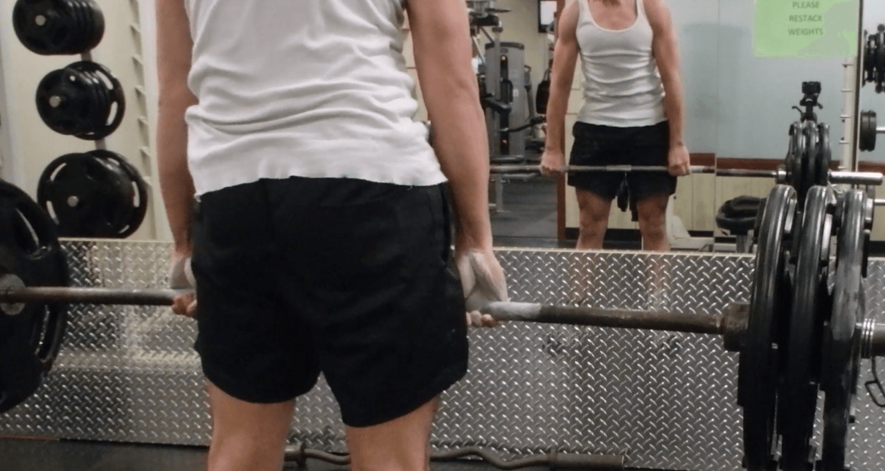
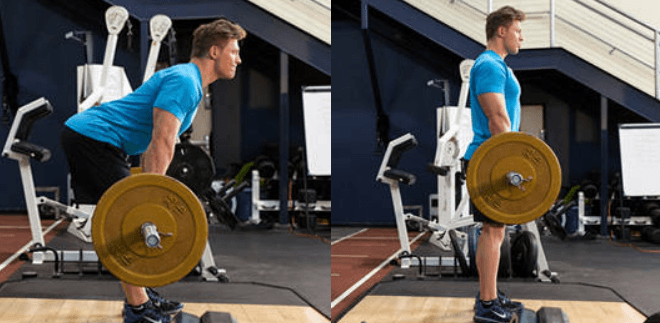
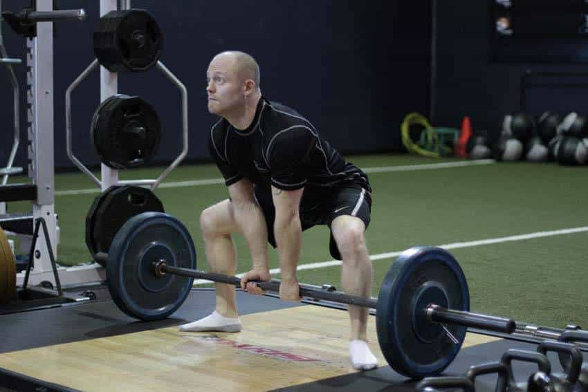
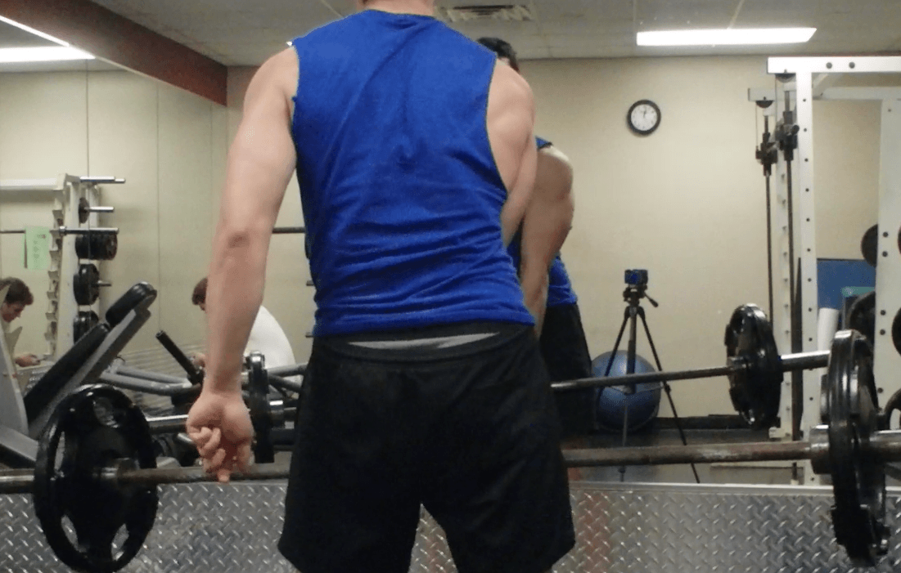
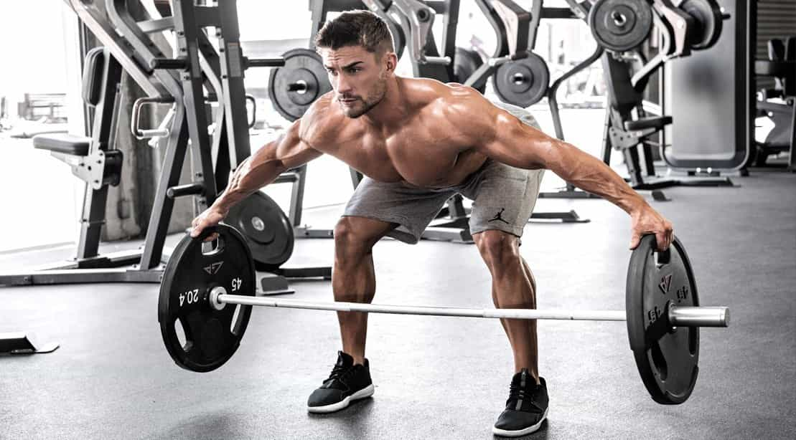
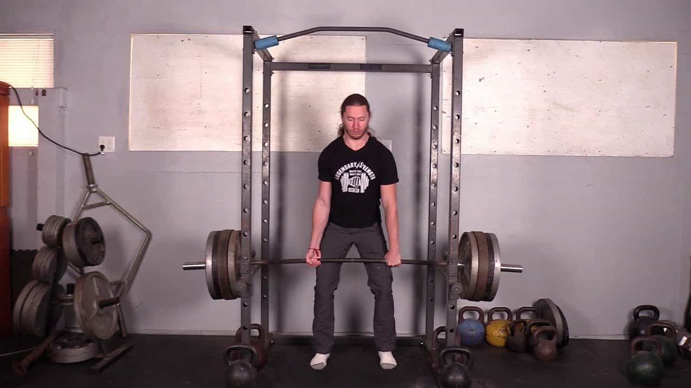

We all love the deadlift, don’t we? Of course we do, the venerable “king of exercises” and all that. I have always said that you can tell something is worthwhile by looking at how many variations on the basic formula there are. The more the better.
This goes for exercises too! The fundamental exercises have a julienne of ariations while specialized isolation exercises are typically “stand alone”—and naturally the more isolated the muscle is, the fewer exercises target it.
And why shouldn’t there be a julienne of variations for this exercise?
The deadlift essentially works all of the muscles of the lower body, and many of the upper body muscles as well. I’ve said it before and I will say it again; if you’re not deadlifting, get on it. But we’ve already discussed that.

Yours truly doing the standard
And once you’ve mastered the basic deadlift, try a few of these variations:
1. Romanian Deadlift

This is a deadlift variation that hits the hamstrings to a greater extent than the standard deadlift, because it involves the legs being mostly, if not entirely, straight and extended.
To do this, hold a bar at hip level with the palms facing down. Your shoulders should be back, your back properly locked and hollowed, and your knees slightly bent. This will be your starting position.
Lower the bar by moving your butt back as far as you can. Keep the bar close to your body, your head looking forward, and your shoulders back. Lower the bar down to your knees or slightly below it. You should feel it in your hamstrings. Any further movement will put stress upon the spine and thus should be avoided for this exercise.
Once you have lowered the bar, the actual lift is done by returning to the starting position by driving the hips forward to stand up tall.
2. Sumo Deadlift

As its name might imply, this deadlift variation gets its name from the wide legged stance you take which, combined with the arms being held in front of the widely placed legs makes you resemble the starting position of the rikishis.
This variation works the inner thighs to a greater extent than a traditional deadlift, and hits the hamstrings similarly to the Romanian deadlift as well. In addition, those with mobility issues might find this easier to do.
Begin with a bar loaded on the ground. Approach the bar so that the bar intersects the middle of the feet. The feet should be set very wide, near the collars. Bend at the hips to grip the bar. The arms should be directly below the shoulders, inside the legs, and you can use a pronated grip, a mixed grip, or hook grip. Relax the shoulders, which in effect lengthens your arms.
The relaxation makes it a little trickier to do then a standard deadlift, as keeping overall torso tightness makes it easier to keep the back in its proper position. Essentially you are going to have to keep the back tight but relax the arms—start with low weight to get the form down.
Anyway, take a breath, and then lower your hips, looking forward with your head with your chest up. Drive through the floor, spreading your feet apart, with your weight on the back half of your feet. Extend through the hips and knees.
As the bar passes through the knees, lean back and drive the hips into the bar.
Return the weight to the ground by bending at the hips and controlling the weight on the way down.
3. One-Handed

The one-handed deadlift is a variant of the deadlift that unilaterally trains one arm, really blasting the forearms and obliques. I have already written about this in an article, so you can read that—make sure to switch hands!
4. Reeves

Also known as the plate pinch deadlift, this deadlift variation is another one that really hits the hands and forearms, and was indeed invented by Hercules himself, Steve Reeves.
To do this, take a standard deadlift position, but instead of grabbing the bar, pinch the plates instead. Then lift as normal.
If you are using multiple 45 pound plates, put a 2.5 pound plate or 1.25 pound plate in between them to create a space to put your fingers between. Also, if you’re doing more than one plate on this deadlift, you’re probably pretty goddamn strong.
5. Health Lift

And finally, all the way back from the era of the American Civil War—the health lift. Perhaps not the most efficient exercise, but an interesting curiosity.
A more modern name for this exercise would be a partial deadlift or a rack pull.
In the health lift, you keep the back as upright as possible (not just locked out, but upright), and lift purely by lifting with the legs and pushing the knees forward. The bar should be racked and at roughly your knee level.
Use these deadlift variations as you will to build strength for the traditional lift.
Read Next: The King Of Exercises Is The Deadlift